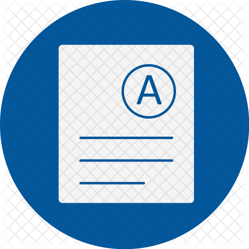

Beoordeling
Het vak wordt beoordeeld aan de hand van tentamens en projecten. Alle onderdelen, mits op tijd ingeleverd, worden becijferd op een schaal van 1 tot 10; om het vak te halen moet het eindcijfer tenminste een 6 zijn.
Als het vak na aanvullende toetsing niet gehaald wordt, vervallen alle deelresultaten; deze kunnen dus niet meegenomen worden naar een volgend jaar. (Zie ook art. 5.10, lid 3 - geldigheidsduur van de Onderwijs- en examenregeling Bacheloropleiding van de Undergraduate School Beta)
Er staat 7.5 ECTS voor dit vak, wat inhoudt dat een totale investering verwacht wordt van ongeveer 210 uur per persoon. Naast het volgen van hoorcolleges, werkcolleges en practica word je dus geacht nog zo'n 15 uur per week (!) te besteden aan het voorbereiden van de bijeenkomsten, de projecten, oefenopgaven, en het voorbereiden van de tentamens. Wil je meer weten over wat er van je verwacht wordt, kijk dan ook eens in de studiewijzer.